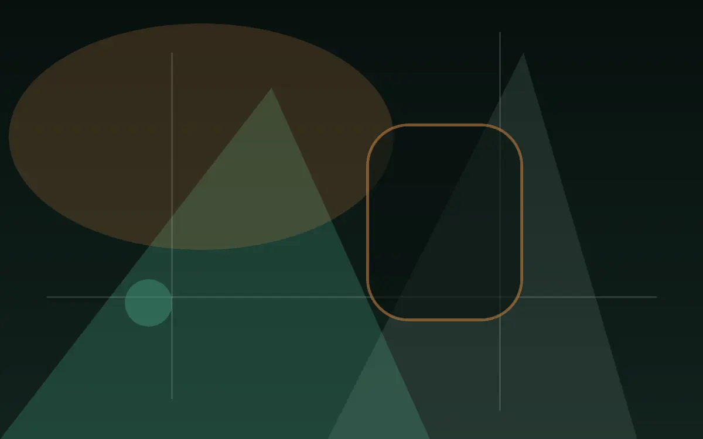
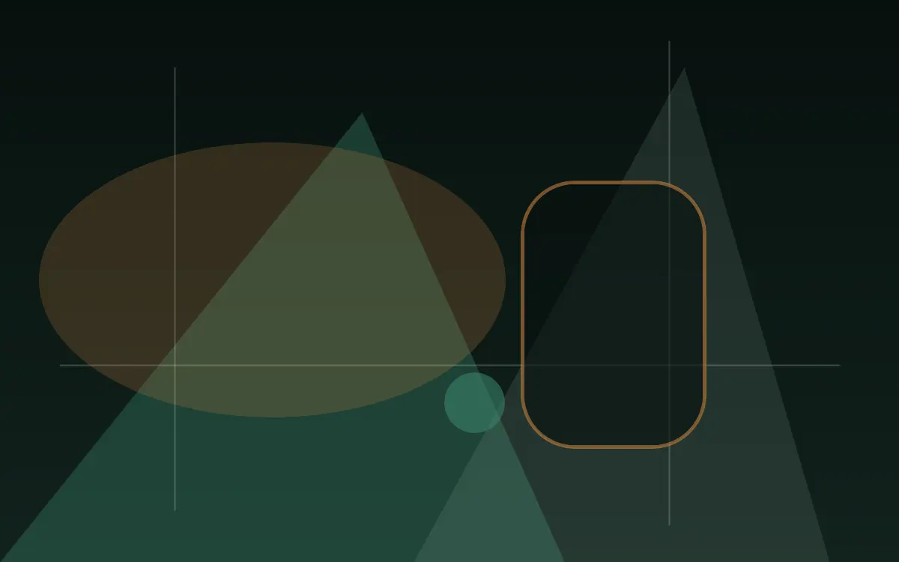
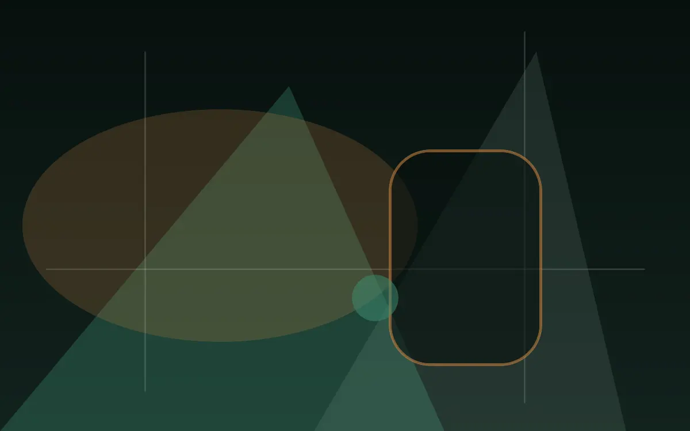
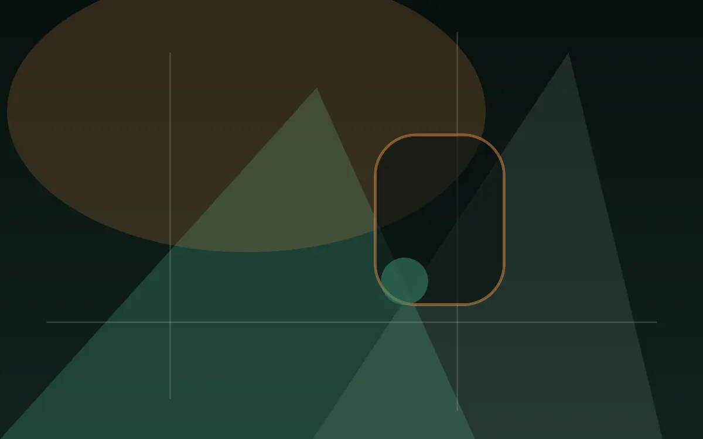
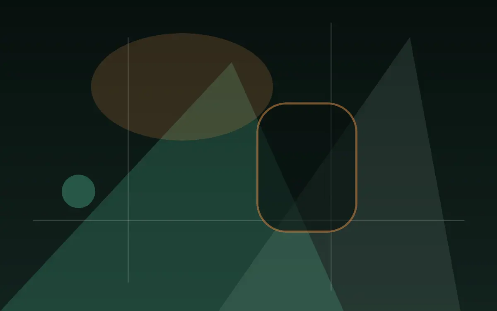
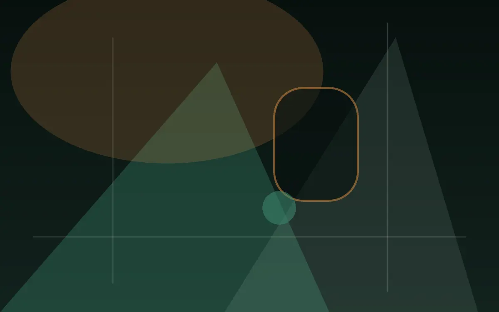
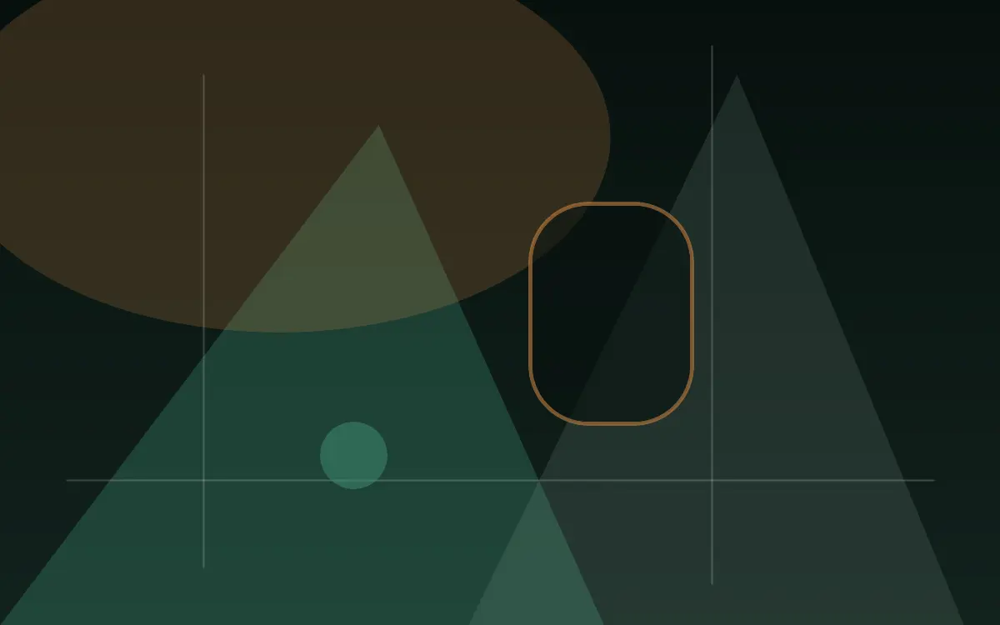
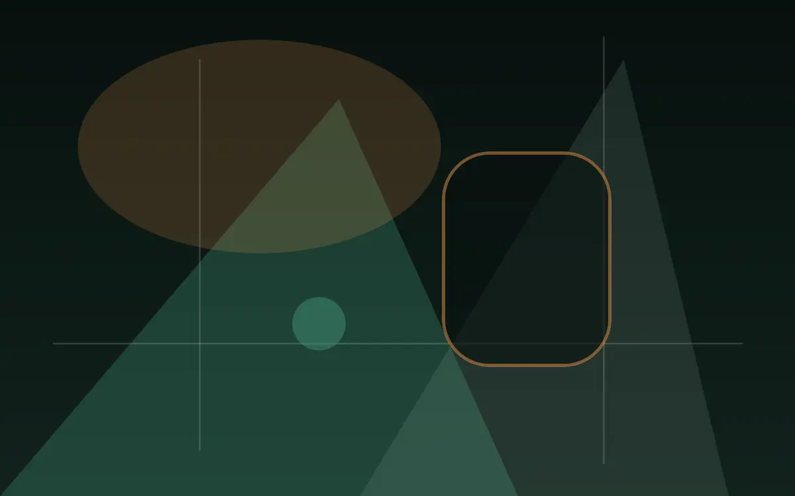

Plan before travelling
Current hours and holiday exceptions should always be confirmed with the physical venue.
Opening details →
An evening grounded in Aotearoa. · New Zealand
On-site gaming, shared food and live moments come together in a physical venue shaped for an unhurried New Zealand night.
Before entering the gaming floor
Casino gaming areas are restricted to guests aged 20 and over. Government-issued photo identification may be required. All gaming described on this website takes place inside the physical venue.
Spin Casino · New Zealand
A land-based entertainment venue balancing warm hospitality, intimate gaming rooms and a relaxed coastal sensibility.
A sequence of softly lit spaces creates clear transitions between welcome, machines, table areas, dining and quiet reset points.
Current hours and holiday exceptions should always be confirmed with the physical venue.
Opening details →Bring current government-issued photo identification and follow venue entry requirements.
House rules →Gaming is entertainment. Take breaks and never chase losses.
Responsible gaming →Explore the venue
Browse the main on-site experiences, then use the visit guide for practical planning.

Physical gaming machines are grouped inside the venue with comfortable spacing, clear wayfinding and staff support close by.
Read more
Hosted table play takes place only on the gaming floor. Entry controls, etiquette and availability are managed on location.
Read more
Local music, food-led gatherings and seasonal entertainment can shape the calendar once each event is formally confirmed.
Read more
A sequence of softly lit spaces creates clear transitions between welcome, machines, table areas, dining and quiet reset points.
Read more
Warm light, natural textures and flexible seating support everything from a quick plate to a longer evening with friends.
Read more
Wayfinding, accessibility information and assistance are available throughout the physical venue.
Read more
Practical tools, breaks and confidential support help keep gaming in perspective.
Read more
Guests entering casino gaming areas must be 20 or older. Bring valid photo ID and review transport and access information before travelling.
Read moreQuestions before the visit
Entry follows the legal gaming age in the venue’s jurisdiction. New Zealand casino gaming areas are restricted to guests aged 20 and over; Canadian requirements depend on the host province or territory.
Bring current government-issued photo identification accepted in the venue’s jurisdiction. Staff may request it at entry or inside age-restricted areas.
No. All gaming takes place inside the physical venue. This website does not provide online gambling.
Physical machine areas, hosted table zones and automated equipment may be available. The operator must confirm the exact daily mix.
The venue information includes step-free routes, seating and assistance guidance. Confirm any specific requirement with guest services before travelling.
Make a night of it
Explore the rooms, check entry guidance and plan an in-person visit.
Cookie controls